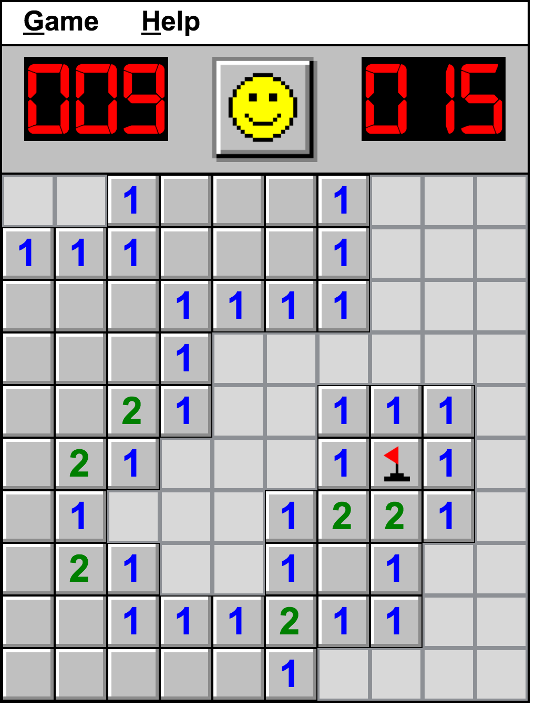

Game: https://jsur.github.io/picture-recognition/
Original implementation at https://quickdraw.withgoogle.com
API usage example from Jeroen Druwé (found via Google search)
https://jeroendruwe.be/drawing-recognition-using-google-apis-in-angular/
File action.js for all user interaction functionalities.
File canvas.js for canvas functionalities. Used to capture each line drawn on canvas element.
Each line drawing event (mousedown) leaves a line.
3 properties used from Event object for capturing trace for API usage:
e.clientX: Current mouse pointer x coordinate
e.clientY: Current mouse pointer y coordinate
e.timeStamp: Returns the time (in milliseconds) at which the event was created.
Timestamp starts increasing from first mousedown until canvas clearing event.
mouseup event fires data sending AJAX function
data: {
"options": "enable_pre_space",
"requests": [{
"writing_guide": {
"writing_area_width": canvas.width,
"writing_area_height": canvas.height
},
"ink": trace,
"language":"quickdraw"
}]
}
"ink" property takes trace array:
Array of arrays with 3 arrays inside each:
First: X coordinates, second: Y coordinates, third: timestamps
One array triplet represents one line drawn between one mousedown and mouseup
[
[
[123, 456, 789, 444, .....],
[565, 234, 513, 554, .....],
[1671.7000000000003, 1688.6750000000002, 1705.4450000000002, ...]
],
[
[123, 456, 789, 444, .....],
[565, 234, 513, 554, .....],
[1671.7000000000003, 1688.6750000000002, 1705.4450000000002, ...]
]
]
Classic 10 x 10 minesweeper.
Finds empty space with recursion.
Stops when mines nearby, mine flagging with right click.
https://jsur.github.io/minesweeper-clone/